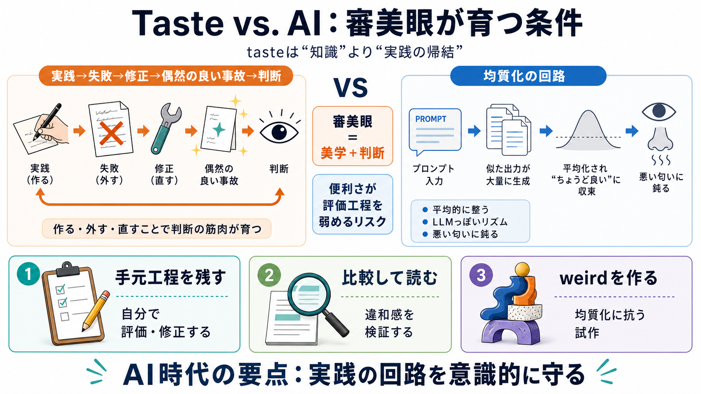

主題 / Theme
tasteは「知識」より「実践の帰結」

Tasteの成立条件
生成AIの時代に、審美眼（taste／審美眼）を損なう“均質化の回路”が何で生まれるのかを整理します。
主題 / Theme
tasteは「知識」より「実践の帰結」
問い / Question
AI利用は判断を育てる回路を弱めるのか
均質化の誘惑
生成AIは文章や表現を“平均的”に整えやすく、結果として作品の味が似ていくリスクがあります。
観測 / Observation
「LLMっぽい」違和感が広がる
核心 / Core
見た目だけでなく判断基準（感度）自体が弱る可能性
判断の筋肉
taste（審美眼・判断力）は、「説明しなくても良し悪しを判定できる美学と判断」です。
tasteの成分
美学（何を良いと感じるか）
tasteの成分
判断（それが価値に繋がるか）
ポイント
知識だけでは完成しない
前提
直感と経験を、制作・試行錯誤で固める
実践→判断
筆者の中心論は、tasteが育つ“回路”は実践（作る・外す・直す）からしか強くならない、というものです。
i 実作
制作・実装・創作で手触りを得る
ii 失敗
合わない理由を身体で理解する
iii 固定
偶然の良い“事故”がスタイルになる
権威の正体
Rick Rubin / Steve Jobsが“上から味を語る”のは、単なる権力の演出ではなく、強いtasteとキュレーション構造があるからだとされます。
比喩の焦点
“実務者の仕事を取り上げて”味が見える構図
必要条件
例外的な職人（exceptional）を選び、育てる
平均との戦い
生成AIの“相手”は実務者の平均になりやすく、Exceptionalを自力で補わないと面白さが出にくい、という対比が示されます。
人間のキュレーション
例外的な作り手が相手になりやすい
AI利用のズレ
相手が“平均的挙動”だと例外性を補う努力が相対的に減る
悪臭に鈍る
筆者は「AI利用は悪いものに鈍感（nose-blind to bad smells）になり、tasteを弱めうる」と踏み込みます。
内部変化
質の低下を検知しにくくなる
外部結果
改善サイクルが遅れ、判断が更新されにくくなる
LLM臭の逆説
Hacker News / Lobste.rsで「LLMっぽい」と言われたが本人は否定した—それでも受け手の違和感は強かった、という材料が挙げられます。
前提
AIで書いたかは“原因”だけではない
観測
cadence（リズム／文体の癖）が平均化の手がかりになる
示唆
社会的な文体慣行が影響しうる
自覚と検証
本人は「質や洞察が落ちた気がする」と自覚し、頭のアーカイブにcadenceが入るまで、周辺の文章を読み作業を長く続けたと引用されます。
学び方
違和感→比較読解→長期の試行
狙い
自分の判断基準を更新できる状態に戻す
防御の方向
結論は明確な処方箋ではなく、均質化への最善の防御は生成AI利用を控えつつ「変な（weird）アートを作り続ける」ことかもしれない、というトーンです。
抑制
AIを可能な限り使わない（審美の育成を優先）
補強
興味を保つために独自の試作を続ける
受け手の論点
この議論は「AIを使うな」と直線化するより、どこでtasteが弱まるかを見失わない運用が必要だと示唆します。
i 不明確さ
頻度・目的・工程による“どれだけ起きるか”が整理不足
ii 工程設計
自分で試作し、評価・修正の工程を残す
iii 検証
AIの出力を鵜呑みにせず、自分の癖と失敗経験で照合する
iv リスク
異常を検知できないと修正不能になる（最も怖い）
v 持続性
“変なアート”は有効でも、学びの設計がないと偶然頼みになり得る
最後に
tasteは、試し、失敗し、偶然の良い事故に出会うまで実践に投資した人にだけ残る能力です。AI時代は、その実践の回路を意識的に守ることが要点になります。
最優先 / Priority
評価・修正の手元工程を手放さない
方向性 / Direction
均質化に抗って、weird（奇妙）を作り続ける
No references found